#1 · 3042 晶技2026-08-25 10:30
177.00
收盤 177.00 MA5 176.20 > MA10 175.85 > MA20 175.65 L1 172.50 / L2 174.50 / 頸線 177.00 停損 172.50 量度 181.50 彈回 2.61% 站上 0.77% 深度 2.61% 跌幅 6.09%
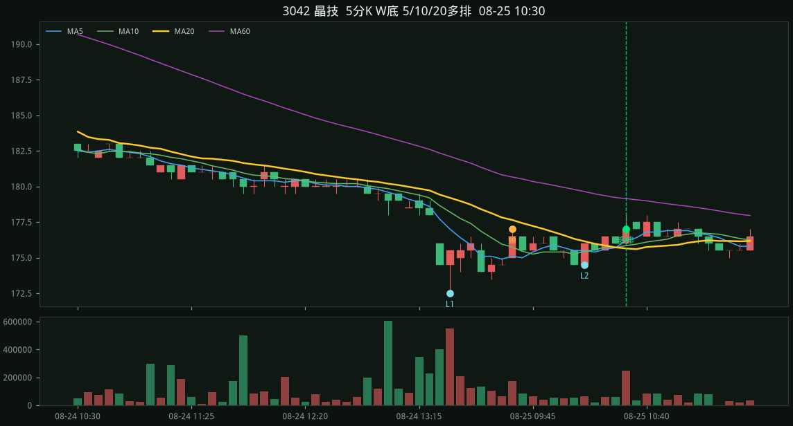
2026-08-25 · 5d · 股價<700 · 嚴格 · 掃描 100 檔
規則：五分 K 做出 W 底（先大跌、兩個相近低點），等五分 MA5>MA10>MA20 多頭排列才進場。
嚴格：同一天做出 W、09:15 後、先跌 ≥5.5%、頸線深度 ≥1.2%、兩低點價差 ≤1.5%、從低點彈回 1.1%～3.5%、收盤站上 MA20 ≥0.45%，且五分 MA5>MA10>MA20 多頭排列才進場。對齊國巨 515/515→11:50 多排、南亞科 480/482→11:55 多排。缺口後貼箱型打底（如旺宏 117.5–119.5 橫盤）不算 W。
08-25 3042 晶技、6451 訊芯-KY、6147 頎邦、3450 聯鈞、8033 雷虎、4991 環宇-KY、8271 宇瞻、2303 聯電、3362 先進光、8358 金居、3441 聯一光、3211 順達、6538 倉和、2344 華邦電、6173 信昌電、8103 瀚荃、2327 國巨、3026 禾伸堂、2408 南亞科、3006 晶豪科、2049 上銀、3532 台勝科、3260 威剛、2637 慧洋-KY
收盤 177.00 MA5 176.20 > MA10 175.85 > MA20 175.65 L1 172.50 / L2 174.50 / 頸線 177.00 停損 172.50 量度 181.50 彈回 2.61% 站上 0.77% 深度 2.61% 跌幅 6.09%

收盤 394.00 MA5 392.40 > MA10 391.55 > MA20 391.32 L1 384.50 / L2 388.50 / 頸線 397.00 停損 384.50 量度 409.50 彈回 2.47% 站上 0.68% 深度 3.25% 跌幅 7.15%

收盤 155.50 MA5 154.60 > MA10 153.70 > MA20 153.55 L1 152.50 / L2 152.00 / 頸線 156.00 停損 152.00 量度 160.00 彈回 2.30% 站上 1.27% 深度 2.63% 跌幅 6.25%

收盤 495.50 MA5 494.40 > MA10 493.70 > MA20 493.05 L1 483.00 / L2 486.50 / 頸線 500.00 停損 483.00 量度 517.00 彈回 2.59% 站上 0.50% 深度 3.52% 跌幅 10.56%

收盤 176.50 MA5 175.60 > MA10 175.40 > MA20 175.38 L1 174.00 / L2 174.50 / 頸線 176.50 停損 174.00 量度 179.00 彈回 1.44% 站上 0.64% 深度 1.44% 跌幅 7.18%
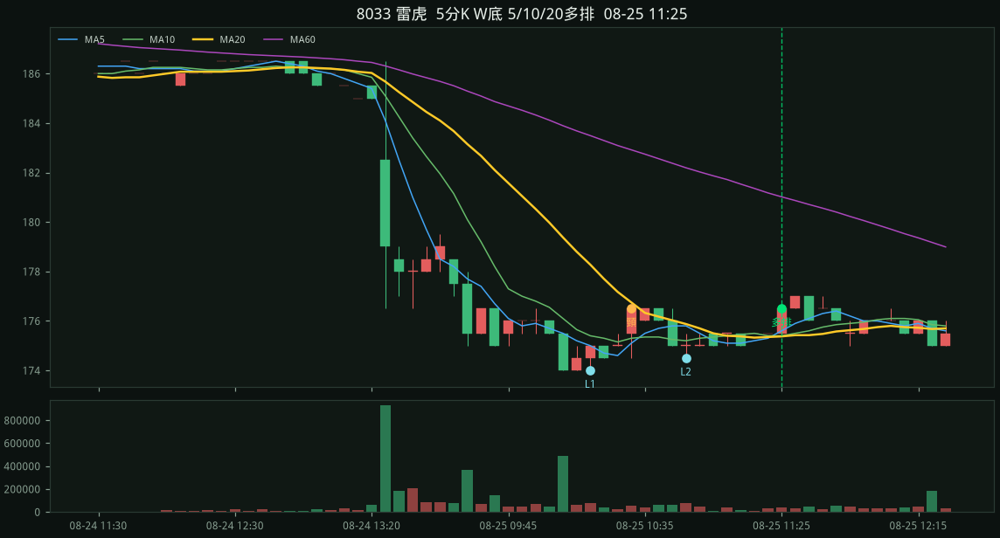
收盤 429.00 MA5 426.30 > MA10 425.95 > MA20 425.70 L1 420.00 / L2 420.00 / 頸線 435.00 停損 420.00 量度 450.00 彈回 2.14% 站上 0.78% 深度 3.57% 跌幅 9.52%
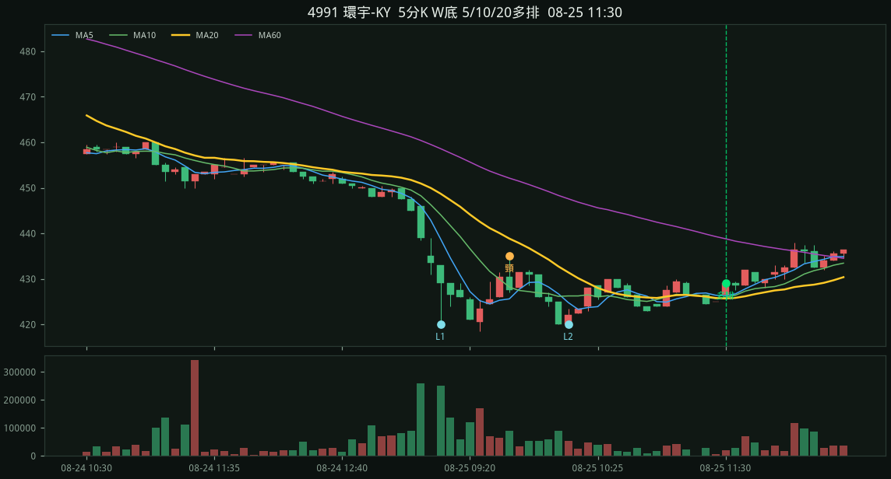
收盤 228.00 MA5 226.70 > MA10 225.75 > MA20 225.70 L1 224.00 / L2 224.00 / 頸線 227.00 停損 224.00 量度 230.00 彈回 1.79% 站上 1.02% 深度 1.34% 跌幅 6.70%

收盤 121.50 MA5 121.40 > MA10 120.80 > MA20 120.67 L1 119.50 / L2 119.00 / 頸線 121.50 停損 119.00 量度 124.00 彈回 2.10% 站上 0.68% 深度 2.10% 跌幅 5.88%
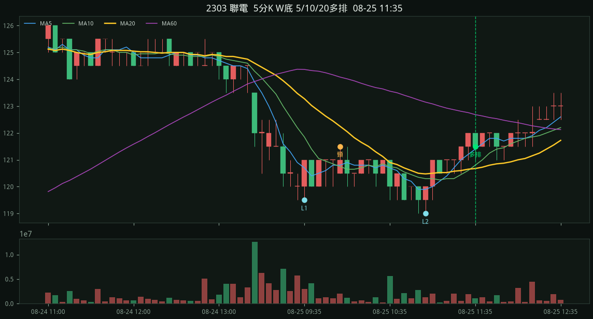
收盤 185.50 MA5 184.20 > MA10 183.35 > MA20 183.20 L1 182.00 / L2 182.00 / 頸線 187.50 停損 182.00 量度 193.00 彈回 1.92% 站上 1.26% 深度 3.02% 跌幅 8.79%
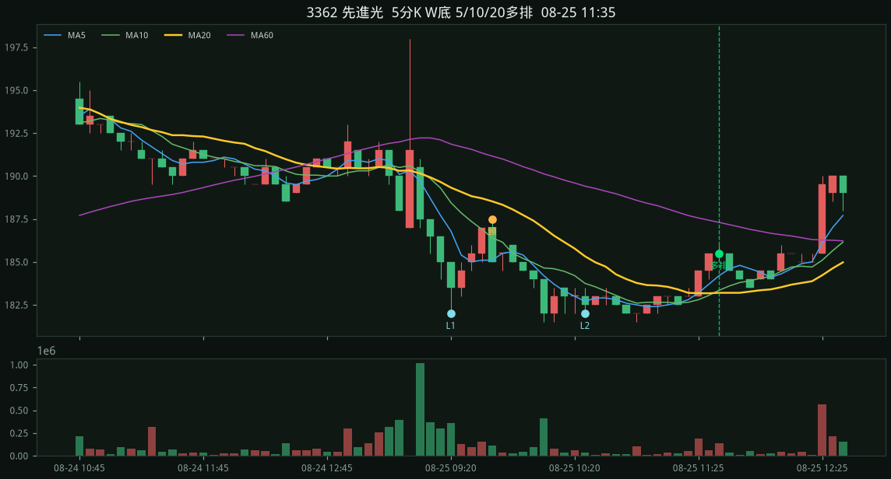
收盤 405.00 MA5 403.60 > MA10 402.65 > MA20 402.50 L1 399.00 / L2 402.00 / 頸線 407.50 停損 399.00 量度 416.00 彈回 1.50% 站上 0.62% 深度 2.13% 跌幅 7.02%
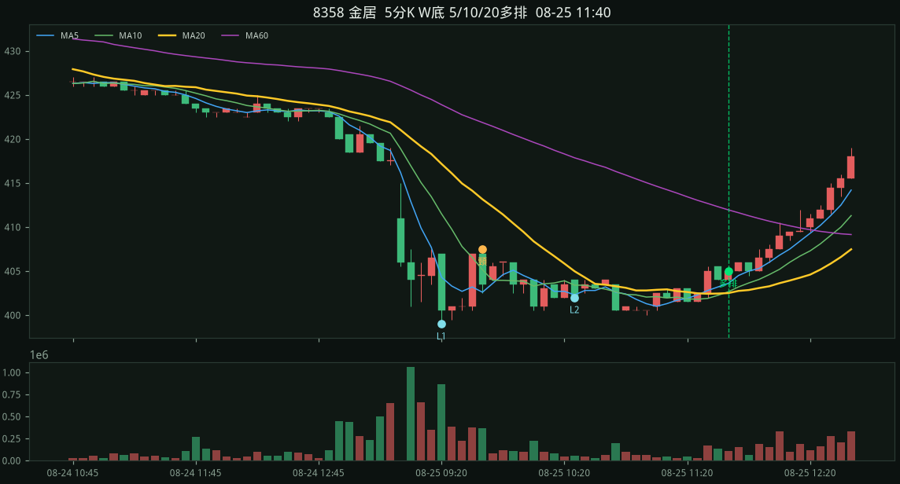
收盤 110.50 MA5 110.40 > MA10 110.05 > MA20 109.92 L1 108.50 / L2 109.00 / 頸線 111.00 停損 108.50 量度 113.50 彈回 1.84% 站上 0.52% 深度 2.30% 跌幅 9.68%
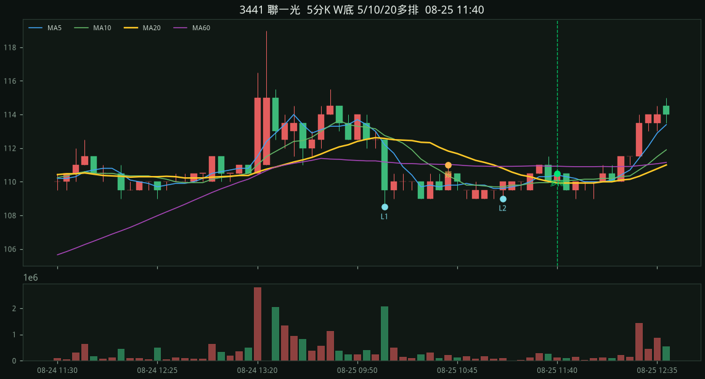
收盤 323.50 MA5 323.00 > MA10 321.65 > MA20 321.18 L1 315.50 / L2 319.50 / 頸線 330.00 停損 315.50 量度 344.50 彈回 2.54% 站上 0.72% 深度 4.60% 跌幅 7.29%
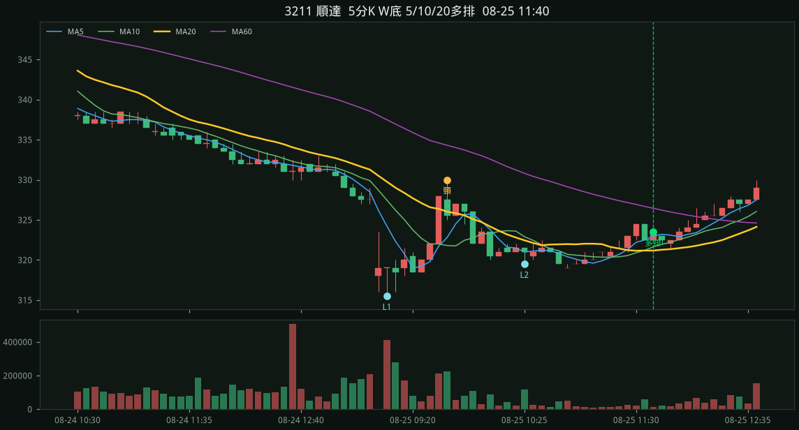
收盤 198.00 MA5 195.20 > MA10 194.75 > MA20 194.22 L1 193.50 / L2 192.00 / 頸線 195.50 停損 192.00 量度 199.00 彈回 3.12% 站上 1.94% 深度 1.82% 跌幅 9.64%
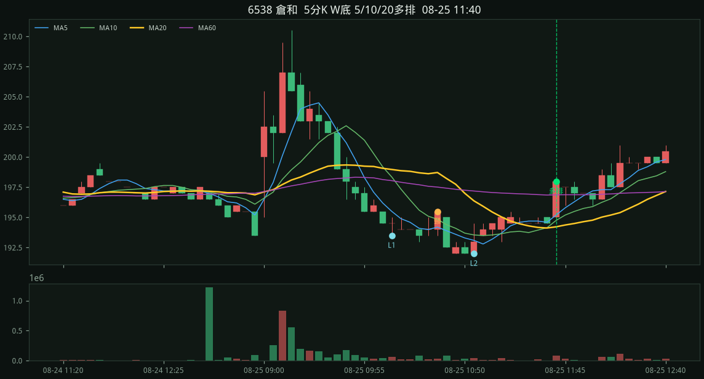
收盤 171.50 MA5 171.10 > MA10 170.50 > MA20 170.47 L1 168.50 / L2 169.50 / 頸線 172.00 停損 168.50 量度 175.50 彈回 1.78% 站上 0.60% 深度 2.08% 跌幅 6.82%
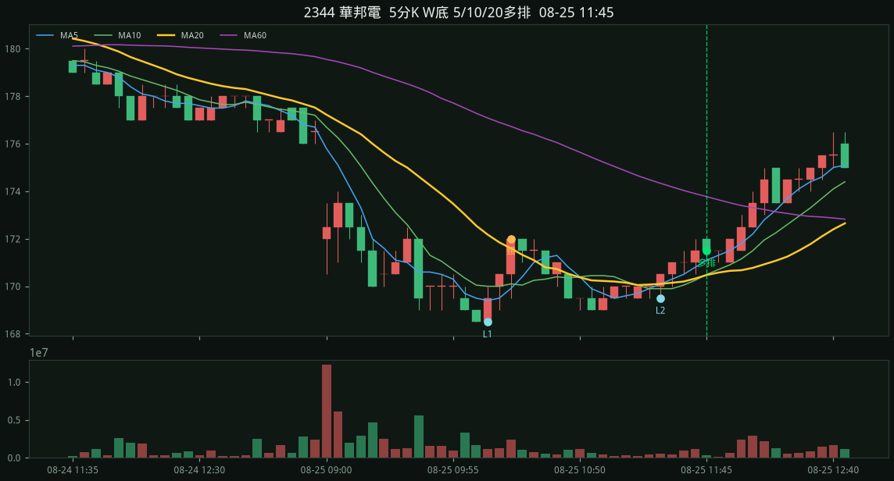
收盤 195.50 MA5 195.20 > MA10 193.85 > MA20 193.70 L1 191.00 / L2 190.50 / 頸線 195.50 停損 190.50 量度 200.50 彈回 2.62% 站上 0.93% 深度 2.62% 跌幅 9.71%

收盤 99.10 MA5 98.54 > MA10 98.27 > MA20 98.22 L1 97.60 / L2 97.80 / 頸線 99.00 停損 97.60 量度 100.40 彈回 1.54% 站上 0.90% 深度 1.43% 跌幅 6.56%
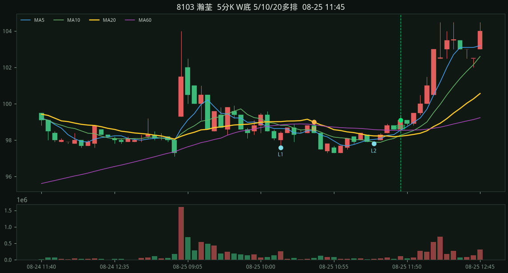
收盤 523.00 MA5 522.60 > MA10 520.20 > MA20 519.40 L1 515.00 / L2 515.00 / 頸線 523.00 停損 515.00 量度 531.00 彈回 1.55% 站上 0.69% 深度 1.55% 跌幅 9.51%
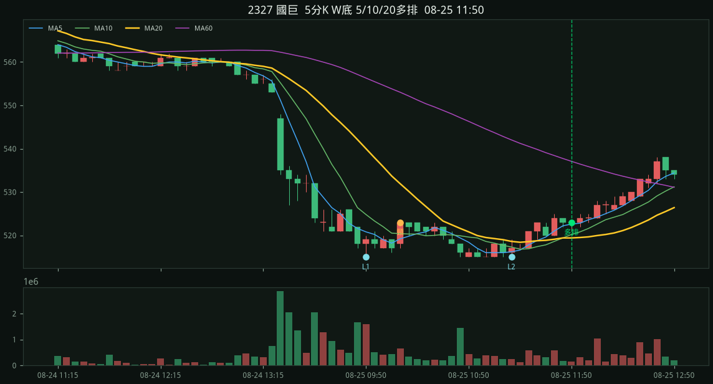
收盤 602.00 MA5 601.40 > MA10 598.40 > MA20 598.25 L1 590.00 / L2 592.00 / 頸線 599.00 停損 590.00 量度 608.00 彈回 2.03% 站上 0.63% 深度 1.53% 跌幅 12.37%

收盤 488.50 MA5 486.90 > MA10 485.40 > MA20 485.15 L1 480.00 / L2 482.00 / 頸線 491.00 停損 480.00 量度 502.00 彈回 1.77% 站上 0.69% 深度 2.29% 跌幅 7.92%

收盤 265.50 MA5 265.00 > MA10 263.50 > MA20 263.15 L1 260.00 / L2 260.00 / 頸線 267.50 停損 260.00 量度 275.00 彈回 2.12% 站上 0.89% 深度 2.88% 跌幅 8.46%

收盤 341.00 MA5 339.60 > MA10 339.50 > MA20 338.77 L1 332.50 / L2 336.50 / 頸線 346.00 停損 332.50 量度 359.50 彈回 2.56% 站上 0.66% 深度 4.06% 跌幅 6.17%
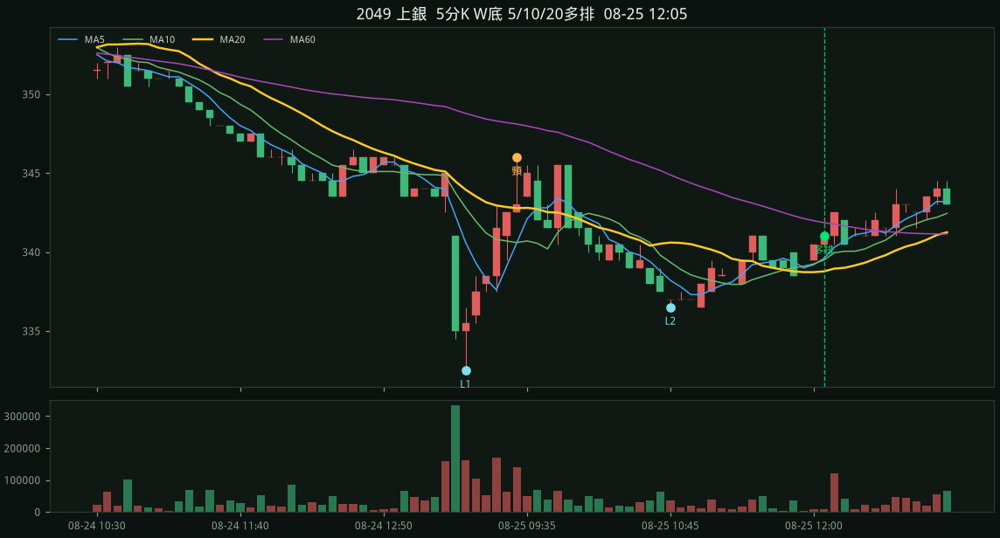
收盤 366.50 MA5 363.70 > MA10 363.40 > MA20 362.35 L1 359.00 / L2 361.50 / 頸線 364.50 停損 359.00 量度 370.00 彈回 2.09% 站上 1.15% 深度 1.53% 跌幅 7.52%
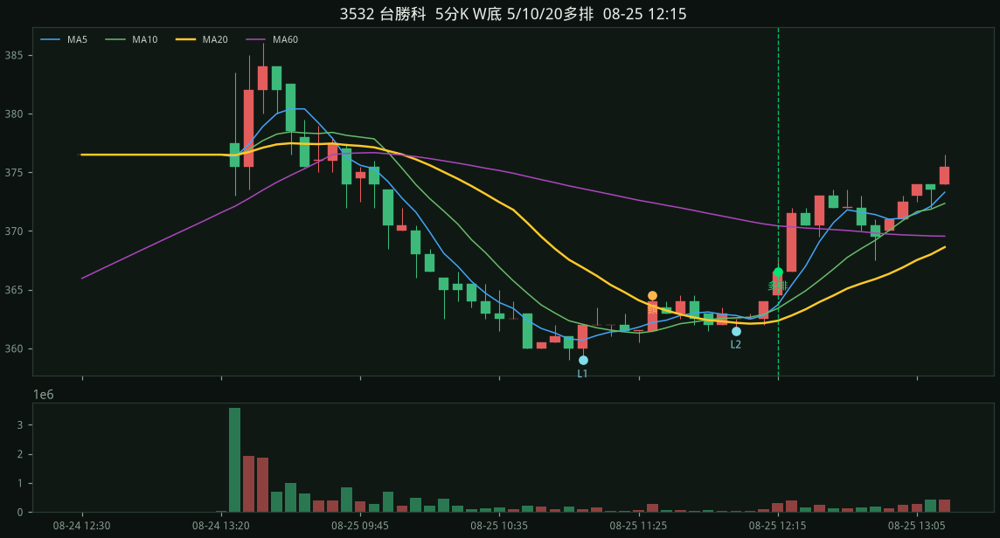
收盤 414.50 MA5 413.10 > MA10 412.75 > MA20 411.93 L1 407.00 / L2 409.00 / 頸線 414.50 停損 407.00 量度 422.00 彈回 1.84% 站上 0.63% 深度 1.84% 跌幅 9.34%
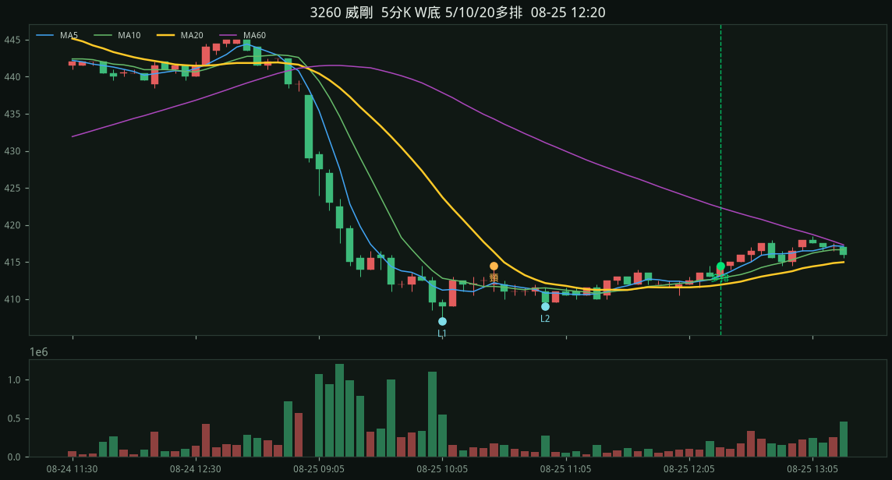
收盤 96.50 MA5 96.14 > MA10 95.84 > MA20 95.72 L1 94.70 / L2 95.40 / 頸線 96.30 停損 94.70 量度 97.90 彈回 1.90% 站上 0.81% 深度 1.69% 跌幅 10.88%
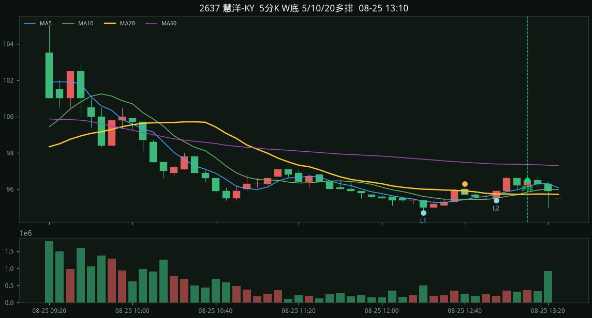